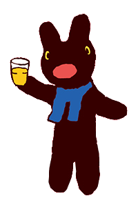
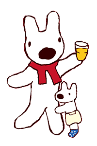

正在繪製巴黎...啊不是，是播報天氣...
**【免責與版權聲明】** 本專案僅為課程作業及技術學習之用，絕不涉及任何商業營利行為。本站所有《卡斯柏和麗莎》（Gaspard et Lisa）角色圖像元素，其版權皆屬於原創者 Anne Gutman, Georg Hallensleben 及其全球授權公司所有。本作品對版權擁有者不構成任何挑戰。
© 2025 Student Project. All rights reserved to their respective owners.